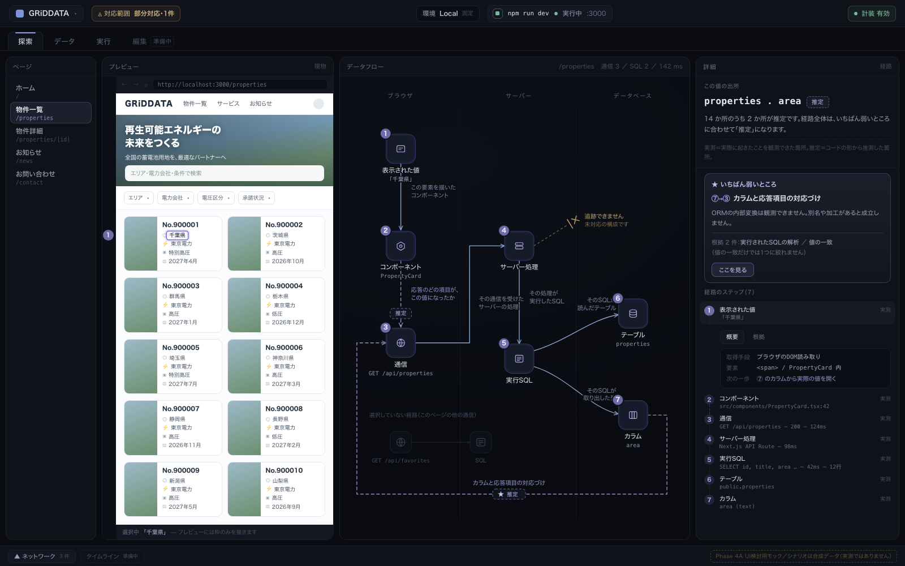
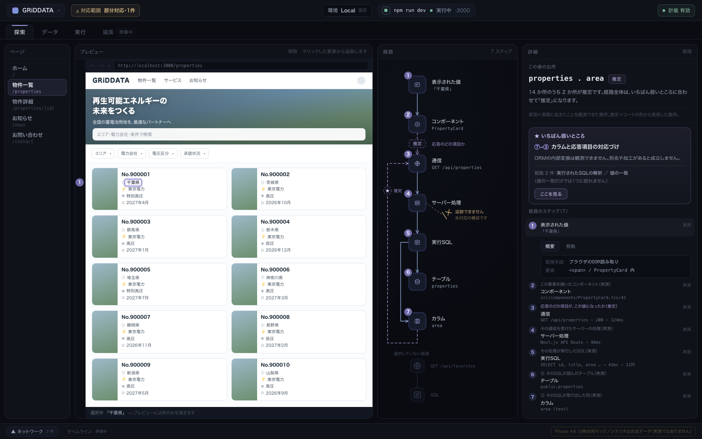
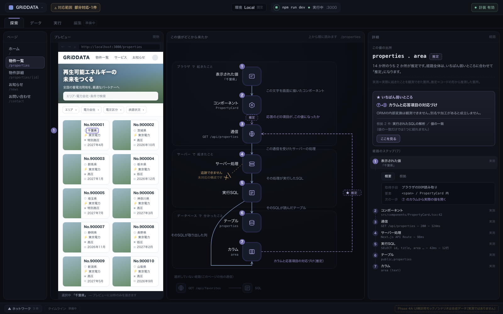

Phase 1〜3 の設計書（IA・UX・観測性情報モデル）に基づく、S-04 探索画面の視覚デザイン探索です。
3案とも 同一のデータ・同一の操作状態（物件一覧ページのカード内「千葉県」を選択した段階2）を描いています。
左アイコンレールは設けず、モード切替は上部タブに一本化しています（02b 決定1）。
| 選択状態 | プレビュー内「千葉県」（PropertyCard）を選択。段階2（クリック）。開示段階3・実データ開示なし |
| 経路 | 7ノード：① 表示された値 → ② PropertyCard → ③ GET /api/properties → ④ サーバー処理 → ⑤ 実行SQL → ⑤ から分岐して ⑥ properties（reads）と ⑦ area（projects）。 7ホップ：うち ②→③（応答項目との対応） と ⑦→③（カラムと応答項目の対応づけ） が推定。最弱環は ⑦→③（下流優先）。 ⑥→⑦ の線は `02a` のモデルに存在しないため描いていない（OBS-05） |
| 異常状態 | 1件：④ サーバー処理からの外部呼び出しが 未対応の構成のため追跡できない（切断マーカー）。N0 の対応範囲インジケータが「部分対応・1件」 |
| 経路外 | 2ノード（GET /api/favorites・SQL）を減光して保持（UI-33）。削除しない |
| 件数 | 14 か所（ノード7 + ホップ7）のうち実測 12 ／ 推定 2。件数は経路から算出する導出値であり定数ではない（`02d` 2.3節） |
| 観測性の符号 | 実線＝実測／破線＋「推定」語＝推定／★＝最弱環／✕バー＝切断。色は一次符号にしていない（NFR-30） |
| 出さないもの | 確度ラベル（高/中/低）、L0〜L3 の記号、ノード上の属性値、ファイアウォール等の実在しないノード、下部への同一フロー図の重複 |
データフローキャンバスを最大面積に置き、ブラウザ／サーバー／データベースの3帯を左→右に配置します（UI-30）。 プレビューは選択の起点として 1:1.5 に寄せ、線の説明は小さく常時表示。経路の立体的な形（折り返す ⑦→③ を含む）が一目で読めることを優先した構成です。

実際のWebページのプレビューを主役に据え、経路は右の細い縦ストリップに索引として畳みます。 線の説明は詳細パネルの番号付きリスト側へ移し、キャンバスには推定の符号（破線・「推定」・★）だけを残しました。 視線はプレビュー → ストリップ → 詳細パネルの一方向に流れます。

「ブラウザで起きたこと／サーバーで起きたこと／データベースで分かったこと」の3ゾーンを上→下に積み、 すべてのホップに平易な日本語の説明を常時表示します。ノードを大きく、余白を広く取り、詳細パネルも最も広く確保しました。 専門用語を知らなくても上から順に読めば経路が理解できることを優先した構成です。
